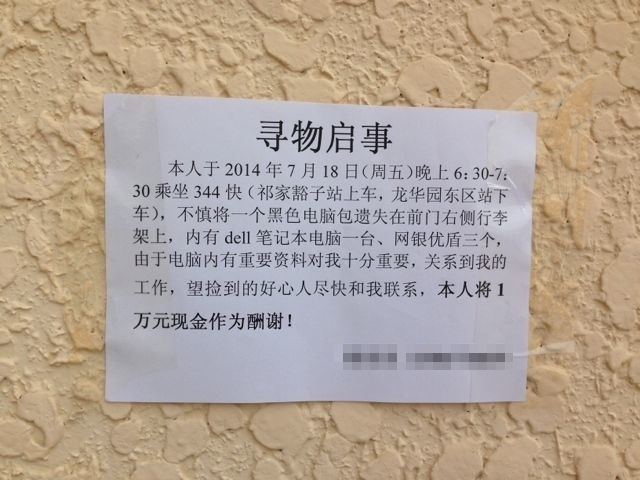

写给大家的
安全手册
说到信息安全，你能想到的是什么？
- 病毒
- 木马
- 中奖/警察办案诈骗
- 。。。
信息安全远超出你的想象
- 打印的文件
- 复制的纸张
- 厕所里的抱怨（被偷听）
- “考，又没保存”（~~~ 断电后 ~~~）
公司的信息资产
- HR
- 员工个人信息 工资
- 销售数据
- 客户信息
- 源代码
- 机密信息
- 市场 公关
- 不良信息（负面信息，丑闻）
资产分类
- 信息资产：数据文件、数据库
- 软件资产：系统软件、应用软件
- 物理资产：计算机、通讯设备
- 服务资产：电力、消防、打印机、复印机
- 纸面资产：协议、合同
- 无形资产：公司形象、名誉、品牌
- 人力资产：员工、工人
信息无处不在
- 电脑 U盘 屏幕
- 录入 保存
- 传输 邮寄
- 谈话
- 废弃
信息安全的3要素
- 可用性(Availability)
- 完整性(Integrity)
- 保密性(Confidentiality)
- 附加要素
- 真实性(authenticity)
- 可审计(accountability)
- 不可抵赖(non-repudiation)
物理安全和人员安全
- 办公场所布局
- 敏感区域
- Clean Room
- 门禁
- 胸卡
- 尾随者（*）
身边的安全小提示
复印机、打印机、填表处
- 身份证，学位证，合同，个人简历（期望薪资）。。。
- 到处都是个人隐私
个人电脑
- 物理安全：防丢防盗
- 信息安全
设备丢失的代价
?
设备丢失的代价
- 硬件本身（笔记本：3000~15000）
- 这个呢？
-
天津一工程检测公司南京丢失核放射源3天后找回
- 给跪了
设备丢失的代价
硬件本身（笔记本：5000）- 恢复数据：人力、时间
- 信息泄露导致的直接损失：银行卡密码，商业机密，可乐配方
- 间接损失：公司名誉、声望、客户信赖
设备丢失的代价
U盘
- 病毒+泄密
- 不带在身上
- 公私分开
- 文件加密
邮件主要安全问题
- 钓鱼
- 病毒
- 泄密
邮件-发送-泄密
- 收件人，抄送是否正确
- 正确使用密送BCC
- 正文、署名是否正确
- 邮件正文、附件是否涉及到机密信息，是否能发给对方
邮件-接收-中毒
- 不打开不可信附件
- 确认发信人
- 丢弃可疑邮件
邮件常见安全问题-对策
- 查看网址连接
- 尤其是短网址，更要确认
- 附件要慎重
SNS
- 勿玩物丧志
- 病毒传播的温床
- 企业信息泄密的途径
- 社工
IM
- 附件
- 陌生人
- 交友还靠线下
信息安全的不二法门
- 用户教育
个人电脑
网络相关
Windows为什么不安全？
- 因为你们都是管理员 :-)
安全对策
- 平时使用普通用户
- 安装杀毒软件
- 常更新
- 关掉不用的服务：共享打印机、文件和设备、远程登录
- 打开计算机上的防火墙程序
- 设置安全的密码
- BIOS密码
- 经常重装机器
- 使用OS X或Linux（Ubuntu）
- 锁屏
从哪里下载软件？
- 官网
- 不做以下事情：
- 非官网
- 论坛
- 汉化版
- 百度搜索结果
网盘/笔记类应用
- 一不小心把账号密码或者商业机密共享出去
- 服务本身漏洞导致的用户信息泄露
一次成功的漫游京东内部网络的过程（由一个开发人员失误导致）
http://www.wooyun.org/bugs/wooyun-2014-055438手机
为什么Android手机不安全？
- 因为它给了你太多的控制权
- 短信（如果你好久没收到10086的短信了，那么要注意了。）
- 联系人
- 电话
- 网络
- root
- 各种硬件（照相机等）
- SD卡：数据可疑被其它应用读取
安装之前，确认权限
请求没必要的坚决不安装。
Android手机要确认
- 不直接下载APK
- 没事别root（iOS别越狱）
- 不知道`uid=0(root) gid=0(root)`为何物者不要root
- App Store
- Google Play/豌豆荚/小米市场
Android手机防范对策
- 防丢失、勤备份
- 设密码
- 不要短信发送、保存重要信息
- 打电话时注意不要被外人听到
- 有钱换iPhone，没钱换feature phone
- ↑↑↑↑上面的是玩笑↑↑↑↑
Wi-Fi
not WIFI WiFi wifi
- 问题
- 不分权限（对内/对外）
- 假热点（专门用于窃取信息）
- 密码可破解 WEP < WPA < WPA2
Wi-Fi 对策
- 不乱连热点（CMCC，饭店，咖啡厅）
- 按员工用/访客用分开；网段隔离
- Mac绑定
- 定期扫描可疑热点
- 路由器也有漏洞（家用容易忽略）
证书安全
什么是HTTPS/SSL/证书- SSL = Secure Socket Layer
- HTTPS = HTTP + SSL
- 证书 = 身份证（由具有公信力的第三方颁发） + 公钥
证书安全
作用
- 通信加密
- 身份验证
证书安全-对策
- 检查证书状态
- 证书有问题的确认网站来源
- 不安装第三方证书
证书安全-删除12306的根证书
- 开始 -> 运行 -> certmgr.msc
- 受信任的根证书颁发机构 -> 证书 -> 下拉找到“SRCA”证书项目，删掉即可。
组织和管理
人的因素
- 最重要的因素
- 最容易控制的因素
- 裁员辞退
- 离职员工管理
- 申请账号：个人邮箱等
- 签署保密协议（简单；实效性，取证比较困难）
- 增加对访问信息资产的认证和授权（实现复杂，成本高）
人员发生变动的时候
- 一定要收回各种账户、访问权限
一旦出事怎么办
- 淡定
- 不要立刻做出决定
- 直接向上司报告
- 长期来说。。。
- 制定组织级别的安全事故方针、对策
偏技术的话题
不懂没关系，混个脸熟总行吧。谨以此部分内容想给对技术一知半解还有点兴趣的童鞋。目前常见攻击-服务器
- SQL注入
- 跨站XSS(Cross Site Scripting)
- 跨站请求伪造（CSRF：Cross-site request forgery）
- DDoS，Distributed Denial of Service
- CC(Challenge Collapsar)
恶意软件
- 病毒： 感染文件
- 蠕虫： 独立存在，自我繁殖
- 特洛伊木马： 独自潜伏
目前常见攻击-客户端
- 钓鱼(phishing)
- 肉鸡（bot）
- 僵尸网络（botnet）
什么是社会工程（社工）
一种操纵他人采取特定行动的行为，该行动不一定符合“目标人”的最佳利益，其结果包括获取信息、取得访问权限或让目标采取特定的行动。社工
- 信息收集是社会工程的一个关键方面
- 诈骗属于社工一种
- 很多非技术手段
APT
高级持续渗透攻击(Advanced Persistent Threat，APT)- 商业或政治为目的
- 长期的经营与策划
- 高度的隐蔽性
- 包含一些社会工程学(简称社工)因素
- 整个攻击过程 ≈≈≈≈ 精心导演的好莱坞大片
0day
- 未公开（地下流传），无补丁，未修正
- 私下交易，灰色地带
- 法律空白
- 政府买家
0day
更多的渗透来自内部：Office pdf 宏，JavaScript，HTML凯文·米特尼克
管理更进一步
认证
BS 7799(ISO/IEC 27001/27002)
信息安全管理实施细则
BS 7799-1:1999 -> ISO 17799 -> ISO 27002
信息安全管理体系规范（Information Security Management System，简称ISMS)
BS 7799-2:1999 -> ISO 27001
ISO/IEC 17799:2005
ISO/IEC 17799:2005版包括11 个方面、39 个控制目标和133 项控制措施
- 1) 安全方针 2) 信息安全组织
- 3) 资产管理 4) 人力资源安全
- 5) 物理和环境安全
- 6) 通信和操作管理
- 7) 访问控制
- 8) 信息系统获取、开发和维护
- 9) 信息安全事故管理
- 10) 业务连续性管理
- 11) 符合性
信息安全管理体系规范（ISMS)
- 为建立、实施、运行、监视、评审、保持和改进信息安全管理体系提供模型
- 以风险管理、风险评估为基础的信息安全管理体系
- 组织的一项战略性决策
ISMS管理过程
- 确定信息安全管理方针
- 确定ISMS(信息安全管理体系)的范围
- 进行风险分析
- 选择控制目标并进行控制
- 建立业务持续计划
- 建立并实施安全管理体系
PDCA（戴明环）
PDCA（Plan、Do、Check、Act）是管理学惯用的一个过程模型，最早是由休哈特（WalterShewhart）于19 世纪30 年代构想的，后来被戴明（Edwards Deming）采纳、宣传并运用于持续改善产品质量的过程当中。
- P（Plan）-- 方针、目标和计划
- D（Do）-- 执行
- C（Check）-- 检查，总结执行结果，找出问题
- A（Action）-- 采取（纠正）行动
最精精精精精简版
- 将人分类
- 将信息分类
- 做出权限矩阵
实施ISMS的关键成功因素
- 与组织文化一致的信息安全方法
- 高层支持（组织级）
- 全员参与（包括外部）
- 足够的财务支持
- 严格执行，灵活应对
- 信息安全作为独立部门存在
- 技术与管理手段是不能分开的
实施难点
- 投入巨大（人力，物力，金钱）
- 需要整体员工的全面配合
- 一定程度上造成机构编制增加
- 安全不是花费而是最好的投资